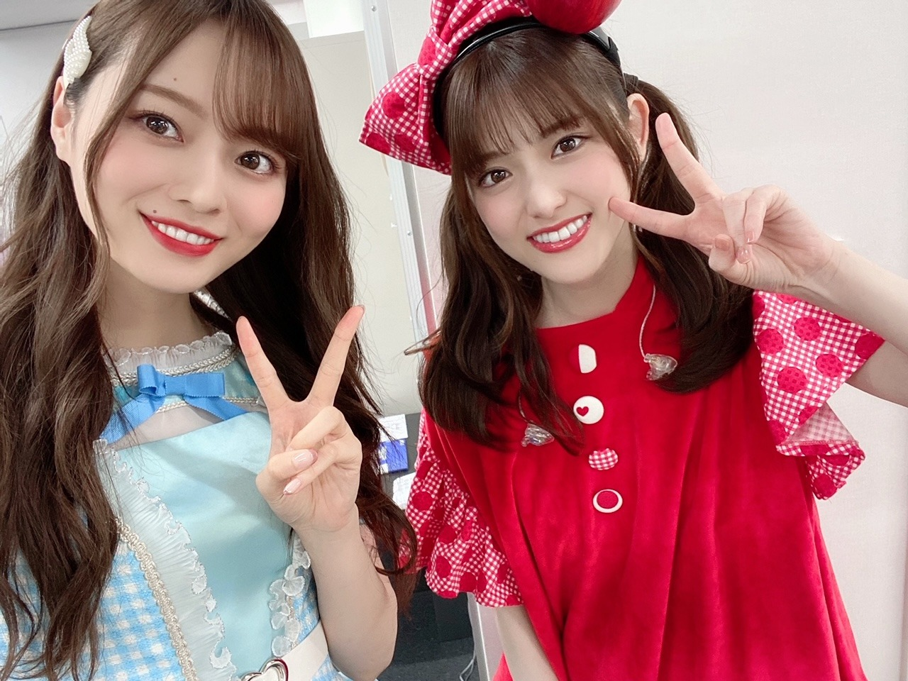
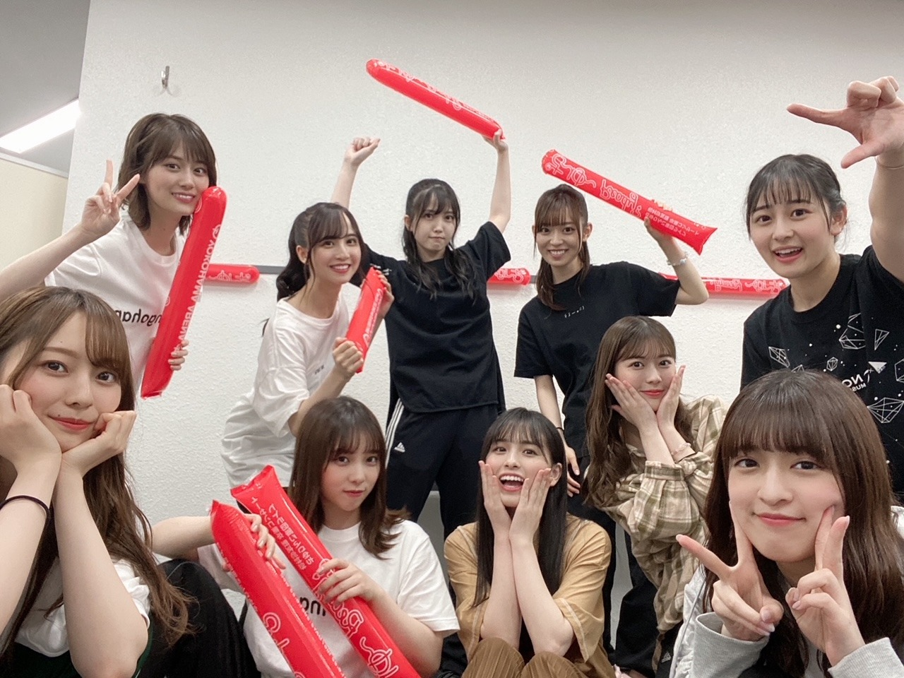
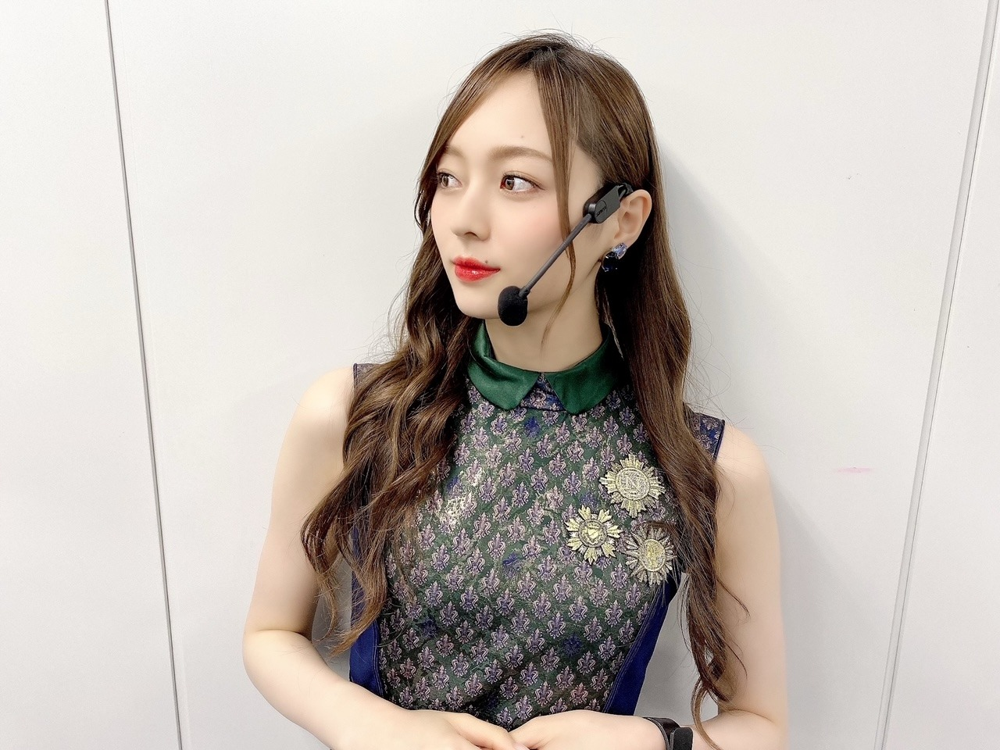

まぶしかったなあ

間違いなく世界で一番可愛い姫でした。
寂しさで涙したりもしたけど
とにかくずっと楽しくて！
とっても幸せでした。
乃木坂をずっとずっと
支えて来てくださった松村さんを
久しぶりの有観客でファンの皆様と一緒に送り出せて本当に嬉しかったです☀︎
夏の全国ツアーに向け 準備を進める中で
松村さんのポジションを皆で埋めていく今、
改めてじわじわと実感する毎日です。寂しい。
言葉にしたことを 全部、
何一つ取りこぼすことなく回収して
絶対に実現させるプロデュース力には
何度も驚かされてきました。
見習いたいけど、
とても真似できるような凄さでは無い。
追いかけようと思っても
とても追いつけないような
そんな凄さをいっぱい持っている先輩です。
殻を破ってくださった マツミンへの仲間入りも
Route 246のシンメも
最後にかけて下さった
無理しないでね という言葉も
全部が思い出で 宝物！
こんなにも可愛くて素敵な先輩と
ご一緒出来たことがなによりも幸せでした！

衣装もすごく新鮮で
皆が可愛くて可愛くて
写真を撮る手が止まらなかったです、ほんとにみんなかわいい
モバメにもまた、おくりますね
みんなでわちゃわちゃしたね
れのとりりあは舞台お疲れ様だったね☀︎
２年ぶりですね。楽しもうね！
乃木坂配信中「うめのソロキャン」
第一弾でアップされました！
４６時間テレビに引き続き、
ソロキャンプしてます
まさか、まさか私が
一発目を任されるなど思っていなかったので
心の中では
私でいいのか...大丈夫なのか...！！と
ビビり散らかしていましたが。
梅澤のソロキャンで、一発目で行こう！
という考えと、任せてくださったことの事実が
何よりも有難かったですし
その気持ちを大事にしなければ！と思いました
自分で見た感想としては
思った以上にずっと喋ってるし
テンションも高すぎて驚きましたね。（笑）
きっと 期待に応えなければ！
というプレッシャーと怖さから
何段階もギアをあげていたのだと思います、
ずっと喋ってて終始うるさくてびっくりした
まあ何にせよ、私であることは間違いないですし
また違う一面をお見せできたという点では
YouTubeならではの良さがお伝えできたのかな？と、
そう思っております...
キャンプ楽しかった！
デジタルデトックスもたまには大切ですね。
個々の魅力のたっぷり詰まったものになっているかと思いますので
チャンネル登録してお待ちくださいね☀︎
あ、ミーグリでもよく聞かれる
お魚の正体については もうしばしお待ちを。

久しぶりにこの衣装着て
インフルエンサーを踊った気がします。
やっぱりかっこいい！
明日はMUSIC DAYに出演させていただきますので
皆様ぜひ見てください︎︎︎︎✌︎
最近は ずっとバタバタしている気がします
なんだか気持ちがずっと忙しなくてですね。
アセアセしてます。
ツアーに向けて体力つけなきゃ！と
思っております。
日々の積み重ねが大切ですね。
毎日トマトを食べすぎているので
こんなに食べても大丈夫かと不安になります
どうでもいいですね
また書きます！
すっかり夏ですね
皆様お身体には気をつけて
たくさん食べて寝て、たまには甘やかしながら
頑張りましょうね
それでは！！
あっという間に７月ですね。
下半期、どうなるんでしょうか
たくさん笑えるといいですね
みんなで楽しいこと
たくさんしましょうね！
Original：https://www.nogizaka46.com/s/n46/diary/detail/62455?ima=4935&cd=MEMBER